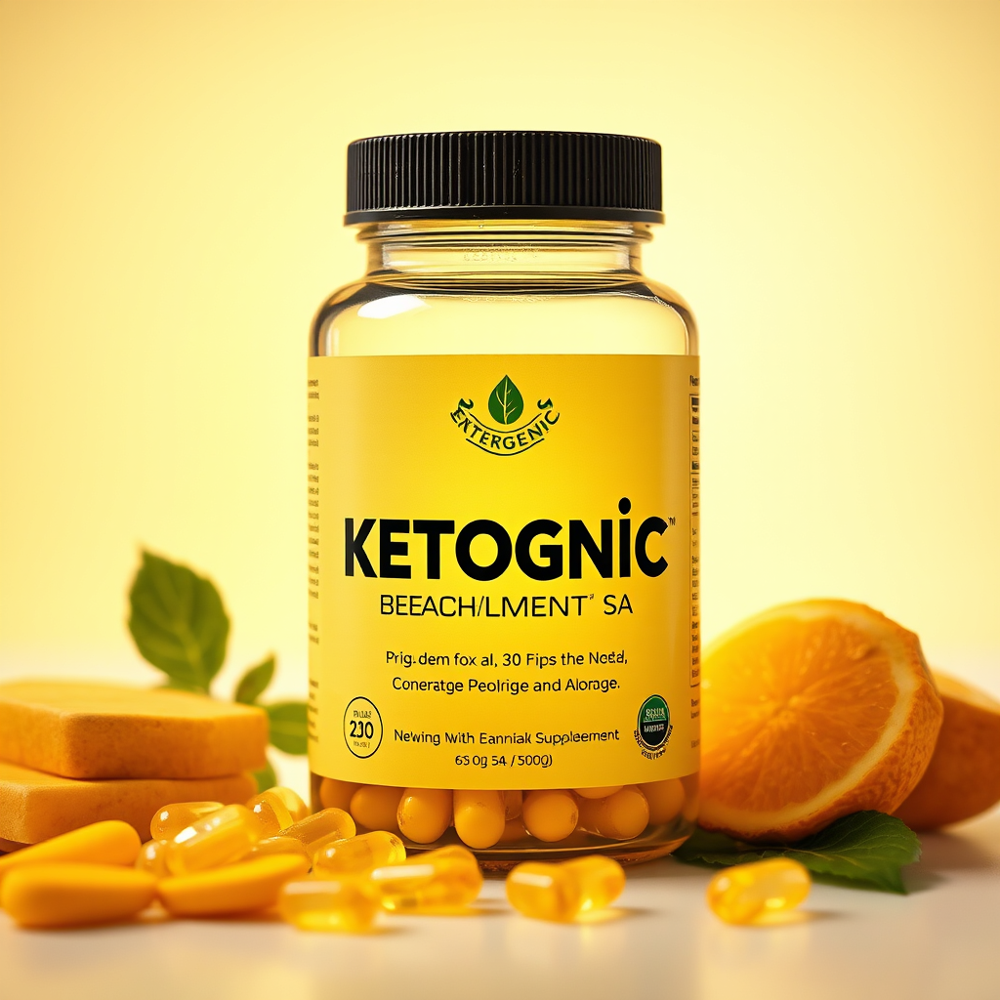
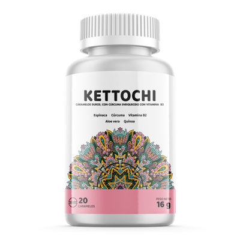
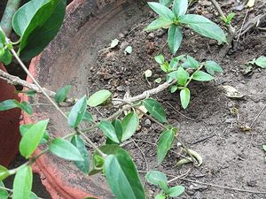

Berberina liposomal + cromo + canela para activación de AMPK y sensibilidad a la insulina. Fórmula científica. Envío a todo Perú.
Berberina liposomal + cromo + canela para activación de AMPK y sensibilidad a la insulina. Fórmula científica. Envío a todo Perú.
Berberina liposomal + cromo + canela para activación de AMPK y sensibilidad a la insulina. Fórmula científica. Envío a todo Perú.
Berberina liposomal + cromo + canela para activación de AMPK y sensibilidad a la insulina. Fórmula científica. Envío a todo Perú.Kettochi combina 6 ingredientes activos respaldados por la ciencia para apoyar niveles saludables de glucosa en sangre, mejorar la sensibilidad a la insulina y proteger contra el estres oxidativo.

La berberina es un alcaloide de plantas como la cúrcuma y el goldense, utilizada en la medicina tradicional china e india por milenios para problemas digestivos y metabólicos. Pero la berberina sola tiene biodisponibilidad muy baja (menos del 5%).
Kettochi usa berberina con liposomas, una tecnología de encapsulación que aumenta la biodisponibilidad de 5% a más del 90%. La liposoma es una burbuja de grasa que la berberina atraviesa fácilmente. Sin liposomas, la mayor parte de la berberina se elimina sin absorberse. Es química, no magia.
La berberina activa AMPK, una enzima maestra que regula el metabolismo. Cuando AMPK se activa, las células queman más glucosa y responden mejor a la insulina. Es el mismo mecanismo por el que funciona el ejercicio y el ayuno intermitente.
Kettochi combina berberina liposomal con cromo (cofactor de la insulina) y canela (mejora sensibilidad a la insulina) para atacar el desequilibrio de glucosa desde tres ángulos: (1) activación de AMPK, (2) mejora de respuesta a la insulina, (3) reducción de picos glucémicos. Es un suplemento basado en ciencia, no en creencias.
La berberina es un alcaloide de plantas como la cúrcuma y el goldense, utilizada en la medicina tradicional china e india por milenios para problemas digestivos y metabólicos. Pero la berberina sola tiene biodisponibilidad muy baja (menos del 5%).
Kettochi usa berberina con liposomas, una tecnología de encapsulación que aumenta la biodisponibilidad de 5% a más del 90%. La liposoma es una burbuja de grasa que la berberina atraviesa fácilmente. Sin liposomas, la mayor parte de la berberina se elimina sin absorberse. Es química, no magia.
La berberina activa AMPK, una enzima maestra que regula el metabolismo. Cuando AMPK se activa, las células queman más glucosa y responden mejor a la insulina. Es el mismo mecanismo por el que funciona el ejercicio y el ayuno intermitente.
Kettochi combina berberina liposomal con cromo (cofactor de la insulina) y canela (mejora sensibilidad a la insulina) para atacar el desequilibrio de glucosa desde tres ángulos: (1) activación de AMPK, (2) mejora de respuesta a la insulina, (3) reducción de picos glucémicos. Es un suplemento basado en ciencia, no en creencias.
La berberina es un alcaloide de plantas como la cúrcuma y el goldense, utilizada en la medicina tradicional china e india por milenios para problemas digestivos y metabólicos. Pero la berberina sola tiene biodisponibilidad muy baja (menos del 5%).
Kettochi usa berberina con liposomas, una tecnología de encapsulación que aumenta la biodisponibilidad de 5% a más del 90%. La liposoma es una burbuja de grasa que la berberina atraviesa fácilmente. Sin liposomas, la mayor parte de la berberina se elimina sin absorberse. Es química, no magia.
La berberina activa AMPK, una enzima maestra que regula el metabolismo. Cuando AMPK se activa, las células queman más glucosa y responden mejor a la insulina. Es el mismo mecanismo por el que funciona el ejercicio y el ayuno intermitente.
Kettochi combina berberina liposomal con cromo (cofactor de la insulina) y canela (mejora sensibilidad a la insulina) para atacar el desequilibrio de glucosa desde tres ángulos: (1) activación de AMPK, (2) mejora de respuesta a la insulina, (3) reducción de picos glucémicos. Es un suplemento basado en ciencia, no en creencias.
1 de cada 3 adultos en Colombia tiene prediabetes sin saberlo. El azucar descontrolado dana silenciosamente tus organos.
La prediabetes no muestra síntomas claros. Millones viven con niveles elevados de azucar en sangre sin saberlo, mientras el daño avanza.
Tus celulas dejan de responder adecuadamente a la insulina, dificultando el transporte de glucosa y generando un ciclo de descontrol metabólico.
Muchos farmacos para el azucar causan molestias gastrointestinales, deficiencia de vitamina B12 y otros efectos secundarios a largo plazo.

En lugar de actuar en una sola ruta, Kettochi aborda el problema desde múltiples angulos: activa la AMPK con berberina, mejora la senalizacion insulinica con canela de Ceilan, reduce la absorción de azucar con gymnema y protege tus celulas con antioxidantes potentes.
Seis ingredientes que actúan en diferentes rutas metabolicas para un control integral de la glucosa en sangre.
Estudios clínicos muestran que la berberina activa AMPK con efectos similares a la metformina en el control glucemico.
La gymnema sylvestre bloquea la absorción intestinal de azucar, evitando los picos glucemicos despues de comer.
La canela de Ceilan y el cromo picolinato optimizan la función del receptor de insulina para un mejor transporte de glucosa.
El acido alfa-lipoico protege las celulas contra el daño oxidativo causado por la hiperglucemia crónica.
Ingredientes de origen vegetal y mineral sin quimicos agresivos. Un complemento natural a tu tratamiento médico.
Cada componente seleccionado por su efectividad comprobada en el control de la glucosa.

Con un vaso de agua durante las comidas. Fácil de incorporar a tu rutina diaria sin alterar tu tratamiento.
Berberina activa AMPK, canela mejora la senalizacion insulinica, gymnema reduce la absorción de azucar y el cromo optimiza los receptores.
En 2 a 6 semanas notaras niveles más estables de glucosa, más energia y mejor bienestar general.
Cada ingrediente con estudios clínicos publicados. La berberina cuenta con más de 2,800 estudios en PubMed.
Materias primas verificadas por pureza y potencia. Formula natural sin quimicos agresivos ni aditivos innecesarios.
Pago contra entrega. Tu pedido llega a cualquier ciudad de Colombia de forma segura y rapida.
Experiencias reales de personas que usan Kettochi.
"Mi glucosa en ayunas bajó de 145 a 118 en el último control. Mi endocrinólogo quedó sorprendido. Lo tomo junto con mi metformina."
"Tengo prediabetes y quería algo natural. Después de un mes con Kettochi, mis niveles están más estables según mi glucómetro."
"Me ayudó a controlar los antojos de dulce. También noto que tengo menos picos de energía durante el día."
* Los resultados pueden variar. Kettochi es un suplemento alimenticio, no un medicamento. Consulte a su médico.
Respuestas claras a las dudas más comunes sobre Kettochi.
Kettochi es un suplemento natural con 6 ingredientes activos (berberina, canela de Ceilan, gymnema sylvestre, acido alfa-lipoico, extracto de banaba y cromo picolinato) para apoyar niveles saludables de glucosa en sangre.
La berberina activa la enzima AMPK, mejorando la sensibilidad a la insulina y el transporte de glucosa a las celulas. Estudios clínicos muestran efectos comparables a la metformina.
Consulte a su médico antes de combinar Kettochi con medicamentos para diabetes. Algunos ingredientes pueden potenciar el efecto hipoglucemiante.
La mayoría de usuarios reportan mejoras entre 2 y 6 semanas de uso constante. Los resultados varian según el estado metabólico individual.
Puede ordenar directamente desde esta pagina con envío a todo Colombia. Pago contra entrega.
Unete a miles de colombianos que ya estan apoyando su salud metabólica con Kettochi. Tu cuerpo merece ingredientes naturales respaldados por la ciencia.
Conoce la evidencia cientifica detras de los ingredientes:
Fuente: Botanica Andina — portal de salud basado en evidencia cientifica.
Explora todos los recursos de kettochi.co:
"Kettochi combina keto y alcachofa con respaldo científico. La alcachofa tiene estudios que apoyan sus propiedades diuréticas y digestivas. Útil como apoyo complementario en programas de pérdida de peso."